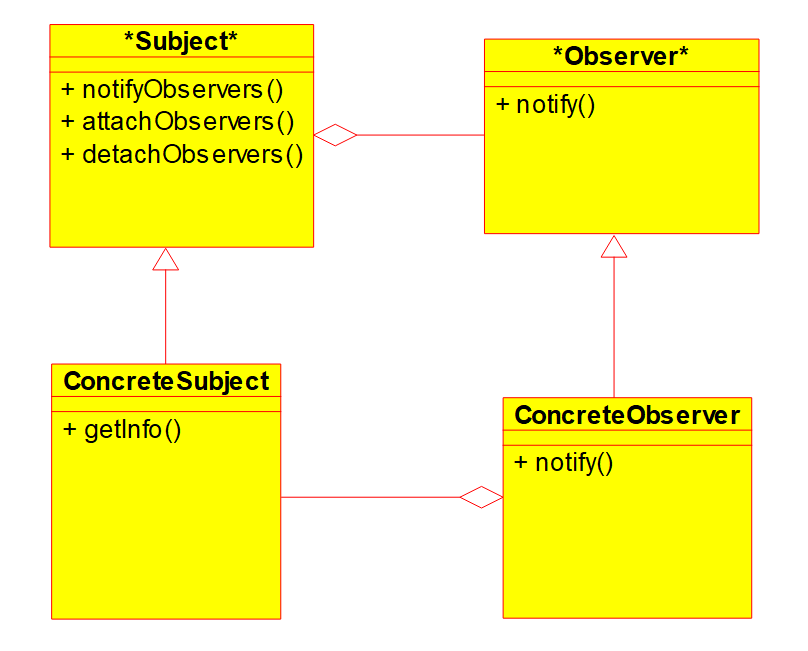
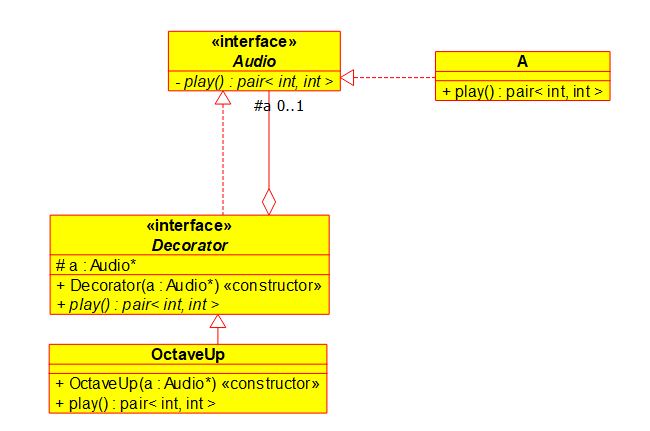
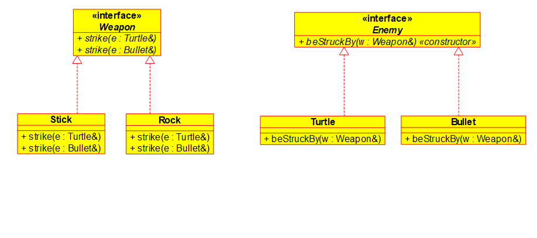

cat /path/file
cat prints user's input to current output stream-n adds line number in front of input and prints output^C (control+C)
ls
ls -a including hidden onespwd
cat > file
^D at the beginning of the line stops providing texts (sends EOF).command > file
cat < file
cat> cat > a.txt
> hello
> henlo
>^D
> cat a.txt # cat receives a.txt as input and open it, prints contents
hello
henlo
> cat < a.txt # opens the file and sends contents to cat via input
hello
henlo
>
*.txt
.txtcat < a.txt > b.txt
a.txt to b.txtcat > file 2> errfile.txt
term. pipes | allow us to take output from one program and redirect it as input to another program.
eg. how many words are there in the first 20 lines of file.txt?
head -20 file.txt | wc -w # wc: word count
head gives first 10 lines; head -n num gives first num lines.eg. have words.txt and words2.txt, each contains a list of words separated by lines. print the words without duplicate.
cat words*.txt | sort | uniq
# sort: sorts lines
# uniq: removes adjacent duplicate items
eg. how to pass result of command as arguments to another command?
files.txt contains a list of file names
wc -w $(cat files.txt)
# same as
wc -w hhh.txt ggg.txt
double suppress matching patterns, single quote supress everything eg.
> echo "hello, the date is $(date) and you are $(whoami) file*.txt"
# hello, the date is Tue Sep 10 14:56:18 EDT 2019 and you are xxxyyy file*.txt
> echo 'hello, the date is $(date) and you are $(whoami) file*.txt'
# hello, the date is $(date) and you are $(whoami) file*.txt
egrep pattern file(s)
egrep "(cs246|CS246)" file.txtpat1|pat2|pat3
(pattern)
[a-Z] [a-z] [A-z] [A-Za-z]
[^...]
?
"cs(-|_| )?246"*
+
.
^...$
eg. matches lines of even length.
"^(..)*$"
eg. lists files in the current directory that contain exactly one a in their names.
ls | egrep "^[^a]*a[^a]*$"
ls -l
type permission owner group size time named rwx rwx rwx
# type user group else
# d | f
# r-bit: read | see the files (ls)
# w-bit: write | can add and remove files
# x-bit: runnable | can navigate (cd)
eg.
wc test.c # has filename
# 18 13 90 testssss.txt
wc < test.c # no filename
# 18 13 90
eg. prints the word count through echo
echo "dassfsafa" | wc
eg. gets holidays for south korea in next 30 days
calendar -A 30 | grep "South Korea"
eg. input lines, sort lines, dedup and add prefix with duplicate counts, sort numerically, prints last 2 lines.
sort | uniq -c | sort -n | tail -2
(tail compose sort compose uniq compose sort)(text)
A -> A -> 3 A -> 1 C -> 2 B
A A 2 B 2 B 3 A
B A 1 C 3 A
C B
A B
B C
chmod
u userg groupo other rolesa all+ add permission- subtract permission= set permission exactlyr, w, xeg. gives other read permissions: chmod o+r file
eg. gives exactly rx permissions to all: chmod a=rx file
eg. gives writable to group and user: chmod gu+w file
term. shell scripts are files containing sequence of shell commands, executed as a program.
eg. a shell script sc.sh
#!/bin/bash
date
whoami
pwd
syntax. variables
name=content (no spaces)x=1$ to fetch contents eg. $x$ when assigning${x} eg. echo ${x}yz -> 1yz$1, $2, ... are command argseg. check if a word occurs in the dictionary
#!/bin/bash
egrep "^$1$" file
syntax. conditional
if [ $1 = "hello"]; then
...
elif [ $1 = "world" ]; then
...
else
...
fi
eg. checks if a word does not occur in the dictionary
egrep "^${1}$" file > /dev/null
# egrep exits with 0 if found, 1 if not found
# $? stores status of most recently run program
if [ $? -eq 0 ]; then
echo "bad password!"
else
echo "good password!"
fi
syntax. function eg. checks if a word does not occur in the dictionary
#!/bin/bash
usage() {
echo "Usage: $0 password"
exit 1
}
if [ $# -ne 1 ]; then
# $# is arg count
# -eq -ne
# -lt -le
# -gt -ge
usage
fi
syntax. while eg. print numbers from 1 to $1
x=1
while [ $x -le $1 ]; do
echo $x
x=$((x+1))
# arithmetic operation format (spaces don't matter)
# eg. $((5+4))
done
syntax. for eg. loop over a list
for x in 1 2 3 4 5; do
echo $x
done
eg. rename all .cpp files to .cc
#!/bin/bash
for file in *.cpp; do
mv $file ${file%cpp}cc
# %: removes cpp from end of var content if it exists, else no change
done
eg. how many times does $1 occur in file $2
#!/bin/bash
x=0
for word in $(cat $2); do
if [ $word -eq $1 ]; then
x=$((x+1))
fi
done
echo $x
awk
awk '{print}' file prints the file line by line like catawk '{print $1,$4}' file splits the file lines, prints 1st and 4th columns, $0 is the whole line, $NF is last columnawk '{print NR, $0}' file prints lines with line numberseg. find the last friday of this month.
report() {
if [ $1 -eq 31 ]; then
echo "payday is the 31st"
else
echo "payday is the ${1}th"
}
report $(cal | awk '{print $6}' | egrep "[0-9]" | tail -1)
# $6 means the 6-th col
eg. hello world
#include <iostream>
using namespace std;
int main()
{
cout << "Hello world!" << endl;
return 0; // implicitly returns 0
}
std::cout prints string literals/variables/int/bools/...std::endl end-of-line character and flushes output bufferusing namespace std can omit std::g++ -std=c++14 program.cc -o program
# g++14 program.cc -o program
remark. most C programs work in C++.
std::cinstd::coutstd::cerr<< "put to">> "get from"eg. add two numbers
int main()
{
int x, y;
cin >> x >> y; //ignores whitespace / delimited by whitespace
cout << x + y << endl;
}
eg. moral: when expanding variables, use quotes
foo="bar baz"
egrep $foo file # searches "bar" in files baz and file
egrep "$foo" file # right
eg. get new extension names for files
#!/bin/bash
rename () {
# $1: original name
# $2: old ext
# $3: new ext
mv "$1" "${1%$2}%3"
}
for file in *.$1; do
# $1: old ext
# $2: new ext
rename "$file" $1 $2
done
eg. calculates the mean of numbers in file, throws error upon invalid param
#!/bin/bash
if [ $# -ne 1 ]; then
echo "$0 takes exactly one arg."
exit 1
fi
A="0"
B="0"
for n in $(cat $1); do
A=$(( $A+$n ))
B=$(( $B+1 ))
done
echo "The sum is $(( $A/$B ))."
eg. a small program that checks whether param is present
#!/bin/bash
printf "${0}:\n"
for i in 1 2 3; do
if [ -z "${!i+unset}" ]; then
printf "\t${i}th param unset\n"
else
printf "\t${i}th param is: ${!i}\n"
fi
done
eg. from last lec.
cin << x << y;
q: what if input is not int? what if input too big/small or is char? what if there is no more input?
a: statement fails; the var is set to 0, INT_MIN or INT_MAX.
std::cin.fail() returns true.std::cin.eof() and std::cin.fail() return true.eg. reads inputs until a bad input/EOF
int main()
{
int i;
while (1)
{
cin >> i;
if (cin.fail()) break;
cout << i << endl;
}
}
syntax. bitwise right shift >>
21 -> 0b010101
21 >> 3 -> 0b010
when the left side arg is std::cin it is the input operator called
cin >> x >> y
//istream int int
// the expression cin >> x returns cin
// hence next setp is
// cin >> y
there is an implicit conversion from istream to bools. this conversion is the result of looking at cin's fail bit negated.
eg. reads inputs until a bad input/EOF
int main()
{
int i;
while (cin >> i) // is implicitly converted to bool
cout << i << endl;
}
eg. reads inputs until EOF, skip non-int.
int main()
{
int i;
while (1)
{
if (!(cin >> i)) // if read fails
{
if (cin.eof()) break;
cin.clear(); // clear fail bit
// inf loop if don't clear
cin.ignore(); // ignore the current input char
// inf loop if .ignore() not present
}
else
{
cout << i << endl;
}
}
}
<iomanip>eg. std::hex affects any following ints that will be converted to hex
#include <iomanip>
...
cout << hex << x; // converts x to hex for output
cin >> hex >> y; // reads x and store its hex
cout << hex << x << dec << x << oct << x << endl;
// prints hex followed by dex followed by oct
cin << hex; // this line affects all future inputs
...
std::string in <string>'\0'eg. string literal
#include <string>
...
string h = "hello"; // still a c-style string
string w = "world"; // ...
// equality compare
h == w;
// lexicographical compare
h <= w;
// fetch length in O(1)
h.length();
// fetch individual chars
h[0], h[1], ...;
// concatenation
hw = h + w;
hw += h;
// helloworldhello
...
std::string.substrh.substr(1,2); // "el"
// start from 1st index, wants 2 chars
std::getline(std::cin, my_str)reads a string my_str including whitespace from std::cin.
<fstream>eg. reads a file and prints it
#include <fstream>
using namespace std;
int main()
{
ifstream file{"file.txt"}; // initializing an ifstream; opens file
string s;
while (file >> s)
cout << s << endl;
}
anything I can do with std::cin/std::cout I can do with std::ifstream/std::ofstream.
<sstream>eg.
#include <sstream>
#include <string>
using std::string
using std::istringstream; // read from a string
using std::ostringstream; // write to string
string intToString(int n)
{
ostringstream oss;
oss << n;
return oss.str(); // returns the string stored in the stringstream
}
eg. convert a string to int (catch failures)
...
int n;
while (1)
{
cout << "enter a number" << endl;
string s;
cin >> s;
istringstream iss{s};
if (iss >> n) break;
}
cout << "you entered " << n << endl;
...
eg. reading ints from stdin, prints all ints, ignoring non-ints
#include <string>
#include <sstream>
using namespace std;
int main()
{
string s;
while (cin >> s)
{
istringstream iss{s};
int n;
if (iss >> n)
cout << n << endl;
}
}
eg.
#include <string>
#include <sstream>
using namespace std;
void printSuiteFile(string name="suite.txt")
// default param (must be on the right)
{
ifstream file{name};
string s;
while (file >> s)
cout << s << endl;
}
int main()
{
printSuiteFile();
printSuiteFile("suite2.txt");
}
eg. two versions of neg function
int neg(int n) { return -n; }
bool neg(bool b) { return !b; }
int main()
{
neg(3); neg(false);
}
int neg(int n, bool b=1); is not a valid overload for int neg(int n);structeg. defining a struct
struct Node
{
int n;
Node *next; // correct
};
struct Node
{
int n;
Node next; // incorrect
// size cannot be determined
};
constconst int max = 100;
Node n1 {5, nullptr}; // nullptr
const Node n2 = n1; // immutable copy of n1
int y = 10;
int &z = y; // reference
z; // 10, not *z
z behaves exactly like y (an alias)eg. increments c by one
void inc(int &c) { ++c; }
remark. things I cannot do with reference
int &z;//wrong
int &3; int &x=y+z;//wrong
int &*x; //wrongint &&z; //wrongint &r[3]={y,y,y}; //wrong<iostream>std::cin |
is | read from stdin |
std::cout |
os | print to stdout |
std::cerr |
os | print to stderr |
<fstream>std::ifstream |
is | read from file |
std::ofstream |
os | write to file |
eg.
ifstream ifs{"read.txt"};
ofstream ofs{"write.txt", ofstream::out | ofstream::app};
// append mode
string s;
ifs >> s; // read
ofs << s; // write
<sstream>std::istringstream |
is | read from string |
std::ostringstream |
os | write to string |
eg.
string s = "123";
istringstream iss{s};
int n;
iss >> n; // writes string to int var
ostringstream oss;
oss << 123;
string s = oss.str(); // writes int to string var
eg. cat
#include <fstream>
#include <iostream>
using namespace std;
void cat(string filename)
{
ifstream ifs{filename};
string s;
while (getline(ifs, s))
cout << s << endl;
}
int main()
{
string s;
while (cin >> s)
cat(s);
}
eg. complex multiplication
#include <iostream>
#include <sstream>
using namespace std;
struct ComplexNumber
{
int re;
int im;
};
ComplexNumber readNum()
{
int re, im;
char sign, buff;
string myNumStr;
cin >> myNumStr;
istringstream iss(myNumStr);
iss >> re >> sign >> im >> buff;
if (sign == '-') im = -im;
ComplexNumber res = { re, im };
return res;
}
ComplexNumber mult(ComplexNumber a, ComplexNumber b)
{
ComplexNumber res =
{
a.re * b.re - a.im * b.im,
a.re * b.im + a.im * b.re
};
return res;
}
int main()
{
ComplexNumber a = readNum();
ComplexNumber b = readNum();
ComplexNumber res = mult(a, b);
cout << "ANS: \n\treal: " << res.re << "\n\timag: " << res.im << endl;
}
eg. an error
void foo(int a, char b, int c=10); // signature (int, char, int)
void foo(int a, char b); // signature (int, char)
// at this point program runs.
int main()
{
foo(10, 'a'); // error! does not which one to call
}
eg. an error
int foo();
string foo();
// wrong! signature does not include return type
remark. references are good for
void inc(int &n);
struct ReallyBig;
int f(ReallyBig rb); // slow due to copying
int g(ReallyBig &rb); // alias, no copy, fast, allows mutation
int h(const ReallyBig &rb); // alias, no copy, fast, no mutation
new / deleteeg.
struct Node;
Node *np = new Node; // uninitialized
Node *np2 = new Node{ 5, nullptr };
delete np, np2;
eg.
Node * myNodes = new Node[10];
...
delete [] myNodes; // used to delete array whose contents are heap objects
eg.
// returns a value
Node getNode()
{
Node n;
return n;
}
// returns dangling pointer, wrong
Node *getNode()
{
Node n;
return &n;
}
// returns a pointer
Node *getNode()
{
Node *n = new Node;
return n;
}
eg. overloads +, *
struct Vec
{
int x,y;
};
Vec operator+(const Vec &v1, const Vec &v2)
{
Vec v
{
v1.x + v2.x, v1.y + v2.y
}
return v;
}
// left:int * right:vec
Vec operator*(const int k, const Vec &v)
{
return
{
k * v.x, k * v.y;
}; // initializes the instance based on return type
}
// left:vec * right:int
Vec operator*(const Vec &v, const int k)
{
return k * v;
}
...
Vec v{1,2}, w{3,5};
Vec x = v + w;
eg. overloads <<, >>
#include <iostream>
using namespace std;
struct Grade
{
unsigned int theGrade;
};
ostream &operator<<(ostream &out, const Grade &g)
{
out << g.theGrade << "%";
return out; // important
}
istream &operator>>(istream &in, Grade &g)
{
in >> g.theGrade;
if (g.theGrade < 0) g.theGrade = 0;
if (g.theGrade > 100) g.theGrade = 100;
return in;
}
int main()
{
Grade g;
// gets grade
cin >> g;
// prints grade
cout << g << endl;
}
##include FILEreplaces include with contents of specified file
#define VAR VALUEeg.
#define MAX 10
int x[MAX];
compiler sees
int x[10];
#define VARVAR's value is an empty string
#if #elif #else #endifeg. decides which type to use
#define SECURITYLEVEL 1
...
#if SECURITYLEVEL == 1
short int
#elif SECURITYLEVEL == 2
long long int
#endif
publicKey;
eg. comments
#if 0
...
#endif // this is effectively a comment
eg. compile with -DX
// file.cc
#include <iostream>
int main()
{
std::cout << X << std::endl;
}
# terminal
> g++ file.cc -DX=10
> ./a.out
10
#ifdef #ifndefeg. turning on debugging
// file.cc
int main()
{
#ifdef DEBUG
...
#endif
}
# terminal
$ g++ file.cc -DDEBUG # replaces DEBUG to 1
split program into multiple files/modules
.h.ccrecall.
eg. separately written program
// vec.h
struct Vec { int x, y; }
Vec operator+(const Vec &v1, const Vec &v2);
// vec.cc
#include "vec.h"
Vec operator+(const Vec &v1, const Vec &v2)
{
return { v1.x + v2.x, v1.y + v2.y };
}
// main.cc
#include "vec.h"
int main()
{
Vec { 1,2 };
v = v + v;
...
}
remark. an entity can be declared many times but defined only once.
eg. compile above files
> g++ vec.cc
# linker error
undefined reference to 'main'
...
> g++ main.cc
# still linker error
undefined reference to 'operator+(Vec const&, Vec const&)'
...
...
> g++ -c vec.cc # compiles only, do not link
> g++ -c main.cc
> ls
main.cc main.o vec.cc vec.h vec.o # creates .o object files
> g++ main.o vec.o -o main # creates main executable
# ./main
if change vec.h, then needs to recompile both vec.cc and main.cc.
creates makefile taht says which files depend on which other files.
eg. makefile for above files
# makefile
# target: dependencies
# recipe
main: main.o vec.o
g++ main.o vec.o -o main
# ^ must be tab
main.o: main.cc vec.h
g++ -c main.cc
vec.o: vec.cc vec.h
g++ -c vec.cc
.PHONY: clean # optional target - remove binaries
clean:
rm *.o main
# compiles files with makefile
> make
# who project is built
... # changes vec.cc
> make
# only vec.cc is rebuilt and relinked project
eg. rebuilt everything
> make clean && make
eg. makefile containing variable
CXX = g++ # compiler name
CXXFLAGS = -std=c++14 -Wall # option - enables all warnings
OBJECTS = main.o vec.o
EXEC = main
${EXEC}: ${OBJECTS}
${CXX} ${CXXFLAGS} ${OBJECTS} -o ${EXEC}
main.o: main.cc vec.h
vec.o: vec.cc vec.h
# can guess recipe is ${CXX} ${CXXFLAGS} -c ....cc
.PHONY: clean
clean:
rm ${OBJECTS} ${EXEC}
g++ -MMDcreates file containing dependencies in make's format
eg.
> g++ -MMD -c vec.cc # creates both .o and .d
> ls
main.cc vec.cc vec.d vec.h vec.o
> cat vec.d
vec.o: vec.cc vec.h
eg. makefile with auto-updating dependencies
CXX = g++
CXXFLAGS = -std=c++14 -Wall -MMD -g # -g: debug mode
OBJECTS = main.o vec.o
DEPENDS = ${OBJECTS:.o=.d}
EXEC = main
${EXEC}: ${OBJECTS}
${CXX} ${CXXFLAGS} ${OBJECTS} -o ${EXEC}
-include ${DEPENDS} # expands these .d files
as the project grows, only needs to add .o files.
eg. global variable in .h
// abc.h
int globalNum; // both declaration & definition
// every file containing abc.h defines a separate vars, program won't link
place it in .cc file -- not visible
solution:
// abc.h
extern int globalNum;
eg.
int n = 5;
int &k = n;
++k;
cout << n; // 6
cout << k; // 6
cout << &k; // address, same as &n
int &k = 2; // wrong
int &k = n+n; // wrong
void foo(const reallyBig &rb);
| C | C++ |
|---|---|
malloc |
new / new[] |
free |
delete / delete[] |
| do not use | use |
eg.
int *n = new int{5};
delete n;
int *m = new int[10]; // can be variable
// instead int m[var] is error since compiler
// doesn't know size to allocate on stack
delete [] m;
// file.h
#ifndef FILE_H
#define FILE_H
...
#endif
first time the file is included, symbol FILE_H is not defined so file.h is included. subsequencetly VEC_H is defined so contents of vec.h are supressed.
using in .h files - will be forced on any files including the file.we can put functions inside structs.
eg.
// student.h
struct Student
{
int assns, mt, final;
float grade();
};
// student.cc
#include "student.h"
float Student::grade()
//
// scope resolution operator
{
return assns * 0.4f + mt * 0.2f + final * 0.4f;
// assns, mt, final are fields of the current object
}
// main.cc
Student s{ 60, 70, 80 };
//
// class object
cout << s.grade() << endl;
//
// method
object.fieldClass::fieldmethods take a hiddent extra parameter this which is the pointer to the object.
s.grade(); // this == &s
eg. explictly write this
struct Student
{
...
// method written in class
float grade()
{
return this->assns * 0.4f + this->mt * 0.2f + this->final * 0.4f;
}
};
C-style field init. ok but limited:
Student billy{ 60, 70, 80 };
better - write a method that initializes
struct Student
{
int assns, mt, final;
float grade();
Student(int assns, int mt, int final);
};
Student::Student(int assns, int mt, int final)
{
this->assns = assns;
this->mt = mt;
this->final = final;
}
...
Student billy{ 60, 70, 80 };
// if constructor is defined then these are passed to constructor
// else this is C-style struct init
eg. another init method identical to above
Student billy = Student{ 60,70,80 };
eg. heap allocation
Student *billy = new Student{ 60, 70, 80 };
advantage of constructors: default params, overloading, sanity checks
eg. default parameters
Student::Student(int assns=0, int mt=0, int final=0);
Student Jane { 70, 80 }; // 70, 80, 0
Student newKid; // 0, 0, 0
// calls default contructor
every class comes with a default constructors (which just default-constructs all fields that are objects).
eg.
Vec v; // default constructor does nothing // junk memory?
the built-in constructor goes away if you write any constructor
eg.
struct Vec
{
int x, y;
Vec (int x, int y)
{
this->x = x;
this->y = y;
}
};
Vec v; // error!
sturct containing constants or refs
eg.
struct My
{
const int myConst;
int &myRef;
}; // must initialize
int z;
struct My
{
const int myConst = 5;
int &myRef = z;
};
eg. this is not right
struct Student
{
const int id; // doesn't change, but not the same for all students.
Student(int id)
{
this->id = id; // attempts to alter CONST field after initialization
}
};
steps when objects are created:
to initialize consts, we hijack step 2. by the use of member initialization list (MIL)
struct Student
{
const unsigned int id;
int assns, mt, final;
Student(unsigned int id, int assns, int mt, int final)
:id{id} // field{param}
,assns{assns}
,mt{mt}
,final{final}
{} // function body
};
consts must be initialized in MIL, other fields can and should be initiailized in MIL.eg. overloading
struct Vec
{
int x = 0, y = 0;
Vec() {} // x=0, y=0
Vec(int x): x{x} {} // x=x, y=0
// uses MIL instead of default field vals
};
every class comes with the following methods:
Student s;Student r = s;Student t; t = s;delete s;Student t = f(s);Student t; t = f(s);eg. copying
Student billy{ 60,70,80 };
Student bobby = billy; // calls a constructor that initializes the same type
eg. own copy constructor
struct Student
{
...
Student(const Student &o) // exactly same functionality as default copy constructor
:id{o.id}
,assns{o.assns}
,mt{o.mt}
,final{o.final}
{}
};
eg. deep copy
struct Node
{
int data;
Node *next;
Node(int data, Node *next)
:data{data}
,next{next}
{}
Node(const Node &o)
:data{data}
,next{
o.next != nullptr ? new Node{*o.next} : nullptr
// pass by another object
}
{}
};
Node *n = new Node {1, new Node{2, new Node{3, nullptr}}};
Node *m = n;
remark. copy constructor is called when
eg. be careful for one-parameter constructors
struct Node
{
...
Node(int data)
:data{data}, next{nullptr}
{}
};
Node n{4}; // fine
Node m = 5; // also calls constructor - implicit conversion
int f(Node n) { return n.data };
f(4); // also works - implicit coversion
eg. explicit constructor types
struct Node
{
...
explicit Node(int data);
};
// now f(4) results in error
when an object destructor is destroyed (stack-allocated objects go out of scope and when heap-allocated objects are deleted), destructor runs.
eg. default destructor
struct Node
{
...
~Node() {}
};
eg. completely delete nodes
struct Node
{
...
~Node()
{
delete next; // nothing happens upon deleting nullptr
}
};
eg. use radial form to create complex num
struct Complex
{
int re, im;
Complex(float r, float theta);
};
explicit Complex::Complex(float r, float theta)
:re{ r * cos(theta) }
,im{ r * sin(theta) }
{
cout << "I'm initialized!\n";
}
eg.
cout << "hi";
// is implicitly converted to
cout << string{"hi"};
eg. confusion
Student billy{60,70,80};
Student jane = billy; // copy constructor called
Student joey; // default constructor
joey = billy; // copy assignment constructor called (default ver. is shallow)
eg. linked list assignment constructor
Node& Node::operator=(const Node &o)
{
this->data = o.data;
delete this->next;
this->next = o.next ? new Node{*o.next} : nullptr;
return *this;
}
eg. better linked list assignment constructor
new fails, prevent next being deleted and pointing to invalid memNode& Node::operator=(const Node &o)
{
// checks assigning self to self <- seg fault
if (this == &o)
return *this;
Node *tmp = this->next;
this->next = o.next ? new Node{*o.next} : nullptr;
// if new fails, this->next unchanged, below is not run
this->data = o.data;
delete tmp;
return *this;
}
eg. copy and swap idiom
#include <utility>
void Node::swap(Node &o)
{
using std::swap;
swap(this->data, o.data);
swap(this->next, o.next);
}
Node& Node::operator=(const Node &o)
{
Node tmp = o; // calls copy constructor in current stack frame
swap(tmp);
return *this;
// at this point tmp's destructor runs and tmp.next is deleted
}
&&eg. consider
Node plusOne(Node n) // copy
{
for (Node *p = &n; p; p = p->next)
++p->data;
return n;
}
Node n{1, new Node{2, nullptr}};
Node n2 = plusOne(n);
Node(const Node&)
plusOne(n) is not an lvalue
plusOne(n)?
eg. rvalue reference
Node::Node(Node &&o)
:data{o.data}
,next{o.next}
{
o.next = nullptr;
}
Node& Node::operator=(Node &&o)
{
this->swap(o);
return *this; // originally &&o is about to be deleted, swap this with
// &&o, then this->next is deleted!
}
Node m;
m = plusOne(m);
return n in plusOne returns using the move constructoreg. another move assignment operator
Node &Node::operator=(Node &&o)
{
delete next;
data = o.data;
next = o.next;
o.next = nullptr;
return *this;
}
Vec makeVec() {return {0,0};}
Vec v = makeVec(); // skips two move constructor calls
// returned value written directly to v's memory
fno-elide-constructors forces all constructors to runin summary, if any of these is written
Object::Object(Object&)Object::Object(Object&&)Object& Object::operator=(Object&)Object& Object::operator=(Object&&)Object::~Object()all five usually have to be written.
left hand side is this
remark. input/output operator should never be member operators
ostream& operator<<(ostream &out, const Vec &v);
eg. error
struct Vec
{
int x, y;
Vec(int x, int y): x{x}, y{y} {}
};
Vec *vp = new Vec[10]; // error
Vec arr[10]; // error as entries have to be initialized, but no
// parameterless constructor defined
// walkaround:
// 1. make a default constructor
// 2. for stack arrays
Vec arr2[3] = {Vec{0,0}, Vec{0,0}, Vec{0,0}};
// 3. create array of pointers
Vec **vp2 = new Vec*[10];
for (int i = 0; i < 10; ++i) delete vp2[i];
delete [] vp2;
compiler ensures that fields are not modified by this method
struct Student
{
...
mutable int numMethodCalls = 0;
float grade() const
{
// if want to change a field inside const it has to be 'mutable'
++numMethodCalls;
return ....;
}
};
associated with the class not a particular instance
struct Student
{
...
static int numInstances; // memory should not be in .h file -> multiple definition
Student(int grade): grade{grade}
{
++numInstances;
}
static void howMany()
{
cout << numInstances << endl;
}
};
// in an cc file, do
int Student::numInstances = 0; // acts like a global var for class
static methods can access static members that do not belong to a specific instance
eg. consider
Node n1{1, new Node{2, nullptr}};
Node n2{3, nullptr};
Node n3{4, &n2};
// when these three go out of scope
// all of n1, n2, n3 deleted
// n1: node and list reclaimed
// n2: node reclaimed
// n3: node reclaimed, next already deleted
// try to delete n2 twice
// delete stack-allocated memory - undefined behavior
// double free error
the node class relies on an assumption that next is nullptr or heap-allocated memory. this is an invariant - a statement that must be true. we can't guarantee this will hold.
to enforce invariant, we use encapsulation. the clients treat the objects as a black box which abstracts away the specifies of the implementation of the class.
we will not allow clients to access fields -> only methods.
int n{5};Foo x = {1,2};eg. when does UI work but =() doesn't?
int n{3.5}; // does not work, no narrowing conversion
eg. when does =() work but UI doesn't?
eg.
struct Binary
{
private:
void swap(Binary &o)
{
std::swap(cap, o.cap);
std::swap(sz, o.sz);
std::swap(arr, o.arr);
}
public:
int sz, cap;
bool *arr;
~Binary()
{
delete [] arr;
}
Binary(const Binary &o)
:sz{o.sz}, cap{o.cap}, arr{new bool[cap]}
{
for (int i = 0; i < cap; ++i)
arr[i] = o.arr[i];
}
Binary &operator=(const Binary &o)
{
Binary tmp{o};
swap(tmp);
return *this;
}
};
private, publiceg.
struct Vec //by default struct is public
{
private: // fields after this are not accessible
int x, y;
public:
Vec operator+(const Vec &o) const;
};
class Vec2 // by default class is private
{
int x, y;
};
eg. llist
// list.h
class List
{
struct Node; // private nested struct
Node *theList;
public:
void addToFront(int n);
int ith(int i);
~List();
}
// list.cc
struct List::Node
{
int data;
Node *next;
Node(int data, Node *next): data{data}, next{next} {}
~Node() {delete next;}
};
List::~List()
{
delete theList;
}
void List::AddToFront(int n)
{
theList = new Node(n, theList);
}
int List::ith(int i)
{
Node *cur = theList;
for (int j = 0; j < i; ++j, cur = cur->next);
return cur->data;
}
// nodes are hidden, can't traverse to the next
void printAll(List list, int size)
{
for (int i = 0; i < size; ++i)
{
int elem = list.ith(i);
cout << elem << endl;
}
} // O(n^2)
certain scenarios occur often. we can keep track of good solutions to reuse and adapt in similar situations
problem: want to visit data stored in a struct without losing encapsulation
solution: create a class that manages access to nodes. iterator class acts like a pointer.
__eg. llist iterator
// list.h
class List
{
struct Node;
Node *theList;
public:
class Iterator
{
Node *p;
public:
explicit Iterator(Node *p): p{p}
{}
int &operator*()
{
return p->data;
}
Iterator &operator++()
{
p = p->next;
return *this;
}
bool operator==(const Iterator &o) const
{
return p == o.p;
}
bool operator!=(const Iterator &o) const
{
return !(*this == o);
}
};
Iterator begin()
{
return Iterator{theList};
}
Iterator end()
{
return Iterator{nullptr};
}
...
}
// main.cc usage
int main()
{
List list;
list.addToFront(1);
list.addToFront(2);
list.addToFront(3);
for (List::Iterator it = list.begin(); it != list.end(); ++it)
{
cout << *it << endl;
} // O(n)
}
Iterator constructor has to be public
autoauto x = y; defines x to have the same type of y.xrange-based fora class has a range-based for loop if it has
begin and end that return the same type (iterator)operator++, operator* and operator!=eg.
for (int n: list)
cout << n << endl;
// mutate
for (int &n: list)
++n;
auto it = List::Iterator{nullptr};
begin() and end() to make iteratorfriend to limit who can access itclass List
{
public:
class Iterator
{
Node *p;
explicit Iterator(Node *p); // is private
public:
...
friend class List; // List has access to all private fields
// * is no longer possible
};
...
};
friends weaken encapsulation - have as less friend as possible.
eg. providing private fields with access/mutator methods
class Vec
{
int x, y;
public:
int getX() { return x; };
void setX(int z) { x = z; };
};
about operator <<
eg. make operator<< a friend function
class Vec
{
...
friend ostream &operator<<(ostream &o, const Vec &v);
};
ostream &operator<<(ostream &o, const Vec &v)
{
o << "(" << v.x << "," << v.y << ")";
return o;
}
visualize the structure of a system to aid in the design and implementation
popular shortcut: uml (unified modelling language)
eg. modelling a class
class Vec
{
int x, y;
Vec(int x, int y): x{x}, y{y} {}
};
class Basis
{
Vec v1, v2;
...
};
Basis b; // error: can't init v1, v2
// default constructor from compiler calls the default constructor of fields - but Vec does not have a default constructor
class Basis
{
Vec v1, v2;
public:
Basis(): v1{{1,0}}, v2{{0,1}} {}
// must have MIL
};
embedding an object insider another is called composition.
relationshp: a Basis object owns a Vec object.
if A owns B then typically:
indicates composition (number) instance names
struct Pond
{
Goose *occupied[max];
};
the items stored in a house can exist without a house existing
o..* - any number within the range can be stored eg. 1..n
indicates aggregation
class Book
{
string title, author;
int pages;
public:
Book(string title, string author, int pages);
};
class Comic
{
... samething above
};
what if i want to store these books in an array?
union BookTypes {
Book *b, Text *t, Comic *c
};
BookTypes shelf[20];
// or
void *shelf2[20];
// both ignore/subvert the typing system
derived class inherit fields and methods from the base class.
class Book
{
...
};
class Text: public Book
{
string topic; // do not repeat field names in subclass
public:
Text(string title, string author, int pages, string topic)
:Book{title, author, pages}
,topic{topic}
{}
};
class Comic: public Book
{
string hero;
public:
Comic(...);
};
subclasses cannot see private members.
when an object is constructed:
Book does not have a default constructor, so it cannot be constructed without calling the constructor in subclass.
if the superclass has no default contructor, the constructor of subclass must use MIL.
protectedprotected members can be seen by children and no one else.
class Book
{
protected:
string title, author;
int pages;
public:
Book(...)...
};
protected breaks encapssulation
eg. uml of inheritance
indicates inheritance
# protected members
eg. slicing
class Book
{
public:
...
bool isHeavy() const {return pages > 200;}
};
class Comic: public Book
{
public:
...
bool isHeavy() const {return pages > 30;}
};
Book b{"a little book", "author", 50};
Comic c{"a big comic", "author", 40, "hero"};
b.isHeavy(); // false
c.isHeavy(); // true
// ...
Book bb = Comic{"a big comic", "author", 40, "hero"};
// Comic is sliced, hero field is stripped, becomes a Book
bb.isHeavy(); // calls Book::isHeavy() false
// store a Comic in Book pointer
Comic *cp = &c;
Book *bp = &c;
cp->isHeavy(); // true as usual
bp->isHeavy(); // calls Book::isHeavy() false
right now a Comic is only treated as a Comic if it is being pointed to by a Comic pointer.
virtualdeclaring the method virtual tells C++ to call a method based on the type of the object being pointed, not the type of the pointer
class Book
{
public:
...
virtual bool isHeavy() const {return pages > 200;}
};
class Text: public Book
{
public:
...
bool isHeavy() const {return pages > 500;}
};
class Comic: public Book
{
public:
...
bool isHeavy() const override {return pages > 30;}
// redundant. but if it is not an override
// (no virtual) and we use the override word
// c++ tells us
};
subclass with method with same signature will have the subclass version. now Book* and Book& referring to a Comic object call the Comic::isHeavy() method.
eg. UML for virtual
now can have an array of books
Books *shelf[20];...
for (int i = 0; i < 20; ++i)
if (shelf[i]) cout << shelf[i]->isHeavy(); // calls isHeavy() based on object
the code accommodates multiple types under one abstraction
istream
|
--------------------------------------------
istringstream iftream iostream
never use arrays of objects polymorphically, use pointers instead
Text *myText[10]; // good
Text myText2[10]; // bad
Book *b = new Text{...};d
delete b; // which destructor called?
// runs ~Text() then ~Book()
when calling a destructor:
destructor of a superclass must be virtual.
valgrind
> g++ main.cc -g
> valgrind --leak-check=full a.out
class Student
{
protected:
int numCourses;
public:
virtual int fees() const = 0; // pure virtual
};
class Regular: public Student
{
public:
int fees() const override;
};
Student *s = new Regular{...}; // can have pointer
fees() is always the subclass version.
eg. UML for interface
interface: italic or cursive
eg. Stack
template <typename T>
class Stack
{
int size, cap;
T *contents;
public:
Stack();
void push(T t);
T top();
void pop();
};
Stack<int> myInts;
Stack<Book*> myBooks;
eg. LinkedList
template <type T>
class List
{
struct Node
{
T data;
Node *next;
};
public:
Node *theList;
class Iterator
{
Node *p;
explicit Iterator(Node *p);
public:
T& operator*();
Iterator &operator++();
...
friend class List<T>;
}
...
T th(int i) const;
void addToFront(const T& t);
};
template <typename T>
void print(List<T> &lst)
{
for (List<T>::Iterator it = l1.begin(); it != l1.end(); ++it)
cout << *it << endl;
}
class Car
{
Engine e;
}; // ~Car() deletes e as well
class Wall
{
Poster &p;
}; // ~Wall() does not delete p
struct Vec2D
{
int x, y;
Vec2D(int x_, int y_): x{x_}, y{y_} {}
};
struct Vec3D: public Vec2D
{
int z;
Vec3(int x_, int y_, int z_): Vec2D{x_, y_}, z{z_} {}
};
Liskov substitution principle. if A is a subclass of B then A should behave like a B in any context.
template is faster than polymorphism (virtuals)
large collection of useful templates
<vector> dynamic-length arrayeg. basics
#include <vector>
std::vector<int> vec{ 4, 5 }; // [4, 5]
std::vector<int> vec2(4,5) // [5, 5, 5, 5]
vec.emplace_back(6); // appends ; can be faster
vec.push_back(6); // appends 6
// iterating
for (size_t i = 0; i < vec.size(); ++i)
std::cout << vec[i] << std::endl;
// or
for (int n: vec)
std::cout << n << std::endl;
// reverse iterating
for (std::vector<int>::reverse_iterator it=vec.rbegin(); it != vec.rend(); ++it)
std::cout << *it << std::endl;
vec.pop_back(); // removes last item
vectors are guaranteed to be implement as an array.
use vectors instead of arrays.
after running a method that modifies an iterator, all iterators are invalid.
eg. .erase
auto it = vec.erase(vec.begin()); // erases first element, returns the new iterator to the new first element
it = vec.erase(vec.begin()+3); // erases 4th element, returns the new iterator to that position
it = vec.erase(vec.end()-1); // removes the last item, returns .end()
// removes all 6 in vec
for (auto it = vec.begin(); it != vec.end();)
if (*it == 6)
it = it.erase(it);
else
++it;
eg. check index
vec[999]; // out of range, undefined behavior
vec.at(999); // exception out_of_range
setmapeg. handle expection
#include <stdexcept>
try
{
std::cout << vec.at(999);
std::cout << "......";
}
catch (std::out_of_range &err)
{
std::cerr << "error: " << err.what() << std::endl;
}
the program resumes after the try-catch block. ...... is not run if last statement is error
std::exception::what returns a string explaing what happens.
if new fails std::bad_alloc is thrown.
control goes through the call stack, unwinding the stack until a handler is found
eg.
void f() {throw out_of_range("f");}
void g() {int arr[10]; f();}
void h() {g();}
int main()
{
try h();
catch (out_of_range) {...}
}
/* call stack
f:
g: arr
h:
main:
*/
/*
exception at f -> no handler -> travels to g -> no handler -> travels to h (arr deleted) -> no handler -> travels to main -> exception caught
if main has no handler, program terminates
/*
eg. what if we need to clean the stack but cannot recover from exception
try ...
catch (some_error_type err)
{
...
throw; // rethrows same exception, not neccessarily err; by value
}
why not throw err?
the exception caught might be a subclass of err, we instead want to throw the actual object being caught.
eg. catch everything
try
{}
catch (...) // literally ...; no access to object; but can be thrown
{}
std::terminate)publish-subcribe model
eg. spredsheets
subject: cells, observers: cells, graphs. updating a cell affects other cells and praphs
there can be many types of classes, and the subject does not need to know info about them - only need to notify

Subject contains code common to all subject. observer acts as an interface for all observers.
sequence of methods:
Subject::notifyObservers() calls each observer's notify() methodConcreteSubject::getInfo() to query state and act accordinglyclass Observer
{
public:
virtual void notify() = 0;
virtual ~Observer() {}
};
class Subject
{
vector<Observer*> observers;
public:
void attach(Observer *ob)
{
observers.push_back(ob);
}
void detach(Observer *ob)
{
// remove in some way
}
void notifyObservers()
{
for (auto o: observers) o->notify();
}
virtual ~Subject() = 0;
};
struct Celeb: public Subject
{
string name;
string lastTweet;
Celeb(string name): name{name} {}
void tweet(string msg)
{
lastTweet = msg;
cout << name << " tweets " << msg << endl;
notifyObservers();
}
};
class Heckler: public Observer
{
string name;
Celeb *c;
Heckler(string name, Celeb *c): name{name}, c{c}
{
c->attach(this);
}
void notify()
{
cout << name << " replied 'you suck!' to " << c->name << endl;
}
};
class Supporter: public Observer
{
...
void notify()
{
cout << name << " retweets " << c->lastTweet << " from " << c->name << endl;
}
};
Celeb *th{"Tom"};
Supporter a{"Albert", &th};
Heckler b{"Bob", &th};
(a class can be abstract by making the destructor pure virtual)
we have an object that we want to add features to at run time
eg. video game character
default behavior (can jump); gains ability to break blocks; gains ability to fire balls
class Pizza
{
public:
virtual float cost() const = 0;
virtual string desc() const = 0;
virtual ~Pizza() {}
};
class CrustAndSauce: public Pizza
{
public:
float cost() const
{
return 5.99;
}
string desc() const
{
return "Pizza";
}
};
class Decorator: public Pizza
{
protected:
Pizza *comp;
public:
Decorator(Pizza *p): comp{p} {}
virtual ~Decorator()
{
delete comp; // has-a
}
};
class StuffedCrust: public Decorator
{
public:
StuffedCrust(Pizza *p): Decorator{p} {}
float prize() const
{
return comp->cost() + 99.99;
}
string desc() const
{
return comp->desc() + " with stuffed crust";
}
};
Pizza *p = new CrustAndSauce{};
p = new StuffedCrust{p};
p = new Topping{"cheese", p};
p = new Topping{"mushroom", p};
...
problem:
struct A
{
~A() {}
};
struct B: public A
{
~B() {...}
};
A *a = new B{};
delete a; // calls A::~A(), causes memory leak
// solution: mark A's destructor virtual
virtual desturctor ==> inheritance
note. don't inherit from concrete class
note. if need a class to be abstract, mark destructor as pure virtual. have to implement.
struct A
{
virtual ~A() = 0;
};
A::~A()
{
delete ...
}
A::~A() will be called every time a subclass is destroyed even it is virtual.

eg.
class Observer
{
public:
virtual void onNotify(info i) = 0;
virtual ~Observer() {}
};
class Student: public Observer
{
public:
void onNotify(info i)
{
cout << i.course << i.content;
}
};
class Lazy: public Observer
{
public:
void onNotify(info i) {}
};
class Subject
{
vector <Observer*> observers;
protected:
void notifyObservers(info i)
{
for (auto ob: observers) ob->onNotify(i);
}
public:
void registerObserver(Observer *ob)
{
observers.emplace_back(ob);
}
virtual ~Subject() = 0; // implement this directly in Subject
};
class Piazza: public Subject
{
string course;
public:
Piazza(string course): course{course} {}
void makePost(string content)
{
notifyObservers(info{course, content});
}
};

eg.
class Audio
{
virtual pair<int, int> play() = 0;
virtual ~Audio() {}
};
class Decorator: public Audio
{
protected:
Audio *a;
public:
Decorator(Audio *a)
:a{a}
{
}
virtual ~Decorator()
{
delete a;
}
};
class A: public Audio
{
public:
pair<int, int> play()
{
return { 440, 1000 };
}
};
class OctaveUp: public Decorator
{
public:
OctaveUp(Audio *a)
:Decorator{a}
{
}
pair<int, int> play()
{
auto p = a->play();
return { p.first * 2, p.second };
}
};
decide the type of object being created at runtime

eg. video game with two kinds of enemies: turtles and bullets. bullets are moer frequent on some later levels.
we don't know what enemy comes next time -> it is random. -> we don't know which constructor to call. additionally, we don't want to hard code the creation policies. so put a factory method in level
class Level
{
public:
virtual Enemy *createEnemy() = 0;
};
class Field: public Level
{
public:
Enemy *createEnemy()
{
// create mostly turtles
int n = ... // random number
if (n < m) return new Turtle{};
return new Bullet{};
}
};
int main()
{
level *l = new Field{};
while (true)
{
Enemy *e = l->createEnemy();
...
delete e;
}
delete l;
}
allow subclasses limited specialization.
eg. draw turtles. some are red shells, some are green shells
class Turtle
{
public:
// Turtle::draw is a template of how to draw a turtle
void draw() // not virtual
{
drawHead();
drawshell();
drawfeet();
}
private:
void drawHead() {...}
void drawFeet() {...}
virtual void drawShell() = 0;
};
class RedTurtle: public Turtle
{
void drawShell() override {...}
};
Turtle *t = new RedTurtle{};
t->draw(); // called superclass
contradicting ideas: if a subclass can specialize behavior, we can't enofrce them to maintain invariants.
the NVI says
eg. without NVI
class DigitalMedia
{
public:
virtual play() = 0;
virtual ~DigitalMedia() {}
};
eg. with NVI
class DigitalMedia
{
public:
void play()
{
doPlay();
}
virtual ~DigitalMedia() {}
private:
virtual play() = 0;
};
we have extra control over play
showCoverArt()<map>eg.
#include <map>
std::map<char, int> m;
m['a'] = 1; // inserts pair 'a' 1
m['a']; // 1
m.erase('a'); // removes key 'a'
// do not use m[s] to check if s is in the map
m['g']; // if key is not found, it is inserted and default constructed, initializes 0
// use
if (m.count('g')); // 0 if not found, 1 if found
// iteratring occurs in sorted key order
// std::pair is included in <utility>
for (std::pair<char, int> &p: m)
std::cout << p.first << p.second;
to use:
> # compile with -g
> gdb a.out
# commands
(gdb) r ...args # run program
(gdb) l # displays code around error line
(gdb) bt # prints traceback
(gdb) p var # prints content of var
(gdb) break linenum # set a breakpoint
(gdb) n # next breakpoint
(gdb) c # continue running
eg. what is called here:
Book *b = new Text{};
void f(Book *b);
void f(Text *b);
f(b); // Book one is called // only virtual methods choose beased on type
want to select the methods called based on the type of two objects
void f(Book*, Student*)
class Enemy
{
public:
virtual beStruckBy(Weapon &w) = 0;
};
class Turtle: public Enemy
{
public:
// calls correct weapon type method
void beStruckBy(Weapon &w) override { w.strike(*this); }
};
class Bullet: public Enemy
{
public:
void beStruckBy(Weapon &w) override { w.strike(*this); }
};
class Weapon
{
public:
virtual void strike(Turtle &e) = 0;
virtual void strike(Bullet &e) = 0;
};
class Stick: public Weapon
{
public:
void strike(Turtle &e) override {...}
void strike(Bullet &e) override {...}
};
Enemy *e = new Bullet{};
Weapon *w = new Stick{};
e->beStruckBy(*w); // calls Bullet::beStruckBy() calls Stick::strike(Bullet&)
strike methods onlybeStruckBy for enemy, and write strike for each weaponeg. adding a visitor to the Book hierachy
class Book
{
public:
...
virtual void accept(BookVisitor &v) { v.visit(*this); }
};
class Text: public Book
{
...
void accept(BookVisitor &v) override { v.visit(*this); };
};
class BookVisitor
{
public:
virtual void visit(Book &b) = 0;
virtual void visit(Text &b) = 0;
virtual void visit(Comic &b) = 0;
virtual ~BookVisitor() = default; // uses compiler-generated default
// superclass shall always have a virtual destructor
};
// keeps track of books we have in our library based on info specific
struct Catalogue: public BookVisitor
{
map<string, int> theCatalogue; // keeps track of number of visits
void visit(Book &b) override { ++theCatalogue[b.getAuthor()]; }
void visit(Text &b) override { ++theCatalogue[b.getTopic()]; }
void visit(Comic &b) override { ++theCatalogue[b.getHero()]; }
};
Book needs BookVisitor in its details while BookVisitor needs Book -> circular dependency.
class A {};
class B: public A {}; // include in header
class C { A myA; }; // include in header
class D { A *myA; }; // declare in header
class E { A foo(A myA); }; // declare in header
when do we need to #include?
#include#includeclass A;class A;if we want to add/remove a private member, all files that include the header file have to be recompiled. we shall hide these details
// window.h
class XWindowImpl;
class XWindow
{
XWindowImpl *impl;
public:
...
};
// windowimpl.h
/**@interface*/
struct XWindowImpl
{
...
};
struct XWindowImplLinux
{
Display *d;
Window *w;
int s;
GC gc;
unsigned long colours[10];
};
coupling and cohesion
coupling: how much distinct program modules depend on each other
high coupling:
cohesion: how related components of a program are
<utility>)<algorithm>)(fopen)low cohesion:
Goal: low coupling, high cohension
the majority of classes should not print things.
a class should only have one reason to change.
Q: should main do all the interactions and method calls? no, main's responsibility is to manage the argv and start the program.
seperate program into three views:
void f()
{
myClass mc;
myClass *p = new MyClass;
g();
delete p;
}
// if g() throws, g is not deleted during stack unwinding
eg. to be exception safe
void f()
{
myClass mc;
myClass *p = new MyClass;
try
{
g();
}
catch(...)
{
delete p;
throw;
}
delete p;
}
all resources should be allocated in a stack-allocated object where destructor will release
destructor deletes unique pointer stored
#include <memory>
void f()
{
myClass mc;
std::unique_ptr<MyClass> p = std::make_unique<MyClass>(...args);
// also can use std::unique_ptr<MyClass> = {new MyClass{...}};
g();
// auto q = p; // fails (copy constructor made uncallable)
}
eg. sample implementation
template<typename T>
class unique_ptr
{
T *ptr;
public:
unique_ptr(T *p): ptr{p} {}
~unique_ptr() {delete ptr;}
unique_ptr(const unique_ptr<T>&) = delete;
unique_ptr<T> &operator=(const unique_ptr<T>&) = delete;
unique_ptr(unique_ptr<T> &&o) {o.ptr = nullptr;};
unique_ptr<T> &operator=(unique_ptr<T> &&o)
{
std::swap(ptr, o.ptr);
return *this;
}
T &operator*() {return *ptr};
T *get() {return ptr;}
};
what if we want multiple pointers to the same object?
if the resource should be shared, ie should not be owned by a specific object, but should be deleted if all references go out of scope, use shared_ptr
{
std::shared_ptr<MyClass> p = std::make_shared<MyClass>(...args);
if (...)
{
auto q = p;
} // q goes out of scope, data not deleted
} // p goes out of scope, data deleted
eg.
struct Data
{
int data;
shared_ptr<Node> next;
shared_ptr<Node> prev;
};
shared_ptr<Node> n = {2,nullptr,nullptr};
shared_ptr<Node> m = {4,n, nullptr};
n->prev = m;
// if n goes out of scope
there are three levels of exception safety for a function f
f throws an exception, the state of the program is valid -> no mem leaked ad all invariants holdf throws (or propagates an exception), it acts like f is never calledf accomplishes taskeg.
class A {...};
class B {...};
class C
{
A a;
B b;
public:
void f()
{
a.g(); // strong
b.h(); // strong
}
};
is C exception safe?
a.g if it throws, state not changed. if it doesn't throw, state could change
b.h if it throws, state was changed by a.g()
so C:f has the basic guarantee (at best)
eg. better one
class C
{
A a;
B b;
public:
A tempa = a;
B tempb = b;
tempa.g();
tempb.h();
a = tempa;
b = tempb;
}
assign pointers does not throw eg. or
struct CImpl
{
A a;
B b;
}
class C
{
unique_ptr<Impl> impl;
public:
void f()
{
auto temp = make_unique<CImpl>(*Impl); // invokes Impl copy constructor
temp->a.g();
temp->b.h();
std::swap(impl, temp);
}
}
eg.
template<class C>
struct TreeNode
{
C data;
virtual int accept(TreeVistor<C> &v) = 0;
};
template<class C>
struct UnaryTreeNode: public TreeNode<C>
{
UnaryTreeNode<C> *child;
T accept(TreeVistor<C> &v) {return v.visit(*this);}
};
struct BinaryTreeNode<C>: public TreeNode<C> {...};
template<class C>
struct TreeVisitor
{
virtual int visit(UnaryTreeNode<C> &t) = 0;
virtual int visit(BinaryTreeNode<C> &t) = 0;
};
template<class C>
struct TreeLengthCounter<C>: public TreeVisitor<C>
{
int visit(UnaryTreeNode<C> &t) {...}
int visit(BinaryTreeNode<C> &t) {...}
};
template<class C>
struct TreePrinter<C>: public TreeVisitor<C> {...};
auto t = UnaryTree<int>{};
auto tv = TreeLengthCounter<int>{};
t.accept(tv);
eg. a copy constructor and =
struct Book
{
...// define copy/move constructor and assignment operators
};
struct Text: public Book
{
string topic;
// no move/copy
};
Text t = {"Algorithm", "CLRS", 500, "CS"};
Text t2 = t; // this uses compiler default copy constructor
// calls super copy constructor, then copies fields
to implement:
Text::Text(const Text &o)
:Book{o}
,topic{topic}
{}
Text &Text::operator=(const Text &o)
{
Book::operator=(o);
topic = o.topic;
return *this;
}
eg. about move constructor and =
Text::Text(Text &&o)
:Book{std::move(o)} // if just pass o, o points to rvalue, but itself is lvalue
// that will cause copy constructor to run
,topic{std::move(topic)}
{}
Text &operator=(Text &&o)
{
Book::operator=(std::move(o));
topic = std::move(o);
return *this;
}
eg. consider
Text t1{...}, t2{...};
Book *bp1 = &t1, *bp2 = &t2;
*bp1 = *bp2; // book's copy constructor called here -> partial assignment, wrong
solution 1: make them virtual
struct Book
{
virtual Book &operator=(const Book&);
};
struct Text: public Book
{ // param same type
Text &operator=(const Book&) override;
};
Text t{...};
Book b{...};
Book *bp = &t;
*bp = b; // assigning Text from Book -> bad
Comic c{...};
t = c // assigning Text from Comic -> bad
// results in mixed assignment
recommendation: all superclasses should be abstract
class _Book
{
string title, author;
unsigned pages;
protected:
_Book &operator=(const _Book&); // not callable to clients
public:
_Book(string, string, unsigned);
virtual ~_Book() = 0;
};
struct Book: public _Book
{
Book(string t, string a, unsigned p)
:_Book{t, a, p}
{}
Book &operator=(const Book &o)
{
_Book::operator=(o);
// if extra fields, copy
return *this;
}
};
struct Text: public _Book {...};
Text t{...}, t2{...};
Book b{...};
Text *tp = &t;
*tp = t2; // ok
_Book *ab = &t;
*ab = b; // error, cannot access protected operator= => prevents mixed and partial assignment
static_casteg.
void f(double);
void f(int);
double d = 5.0;
f(static_cast<int>(d)); // runs second version
eg. superclass to subclass pointer
_Book *b = new Text{...};
Text *t = static_cast<Text*>(b);
// we promise the compiler that the pointer is the type we say it is
// or undefined behavior
dynamic_castbasically a static cast with type checking
we do not know what is stored in the pointer, but if it is the type we want, we will use it
_Book *b = ...;
static_cast<Text*>(b)->getTopic(); // only safe when b points to a Text
Text *t = dynamic_cast<Text*>(b); // if b contains a Text*, that pointer is returned
// if that fails, nullptr is returned
eg.
string getTopic(_Book *bpr)
{
Text *t = dynamic_cast<Text*>(b);
if (t) return t->getTopic();
throw runtime_error{"not a text!"};
}
eg. can write a better polymrphic assignment operator
make _Book::operator=(const _Book&) virtual
class _Book
{
...
virtual _Book &operator=(const _Book&);
};
struct Text: public _Book
{
...
Text &operator=(const _Book &o) override
{
const Text &other = dynamic_cast<Text&>(o);
// if fails, std::bad_cast is thrown
if (this == &other) return *this;
_Book::operator=(other);
topic = other.topic;
return *this;
}
};
Text *t = new Text{...};
_Book *ab = ...;
try
{
*t = *ab;
}
catch (const std::bad_cast &err)
{
// recover
}
const_castconverts between const and non-const -> cast away constness
void g(int *p);
void f(const int *p)
{
g(p); // compiler error
// if we know g does not change p, we can do
g(const_cast<int*>(p));
}
reinterpret_castcast a type into any other type
Student s;
Turtle *t = reinterpret_cast<Turtle*>(&s);
eg. 2d rray
int (*a)[10] = reinterpret_cast<int(*)[10]> (new int [10*15]);
// access like a[i][j]...
delete [] reinterpret_cast<int*>(a);
// casting smart pointers
std::shared_ptr<Student> foo;
std::shared_ptr<Turtle> fee;
foo = std::make_shared<Student>();
fee = std::dynamic_pointer_cast<Turtle>(foo);
// std::const_pointer_cast
// std::static_pointer_cast